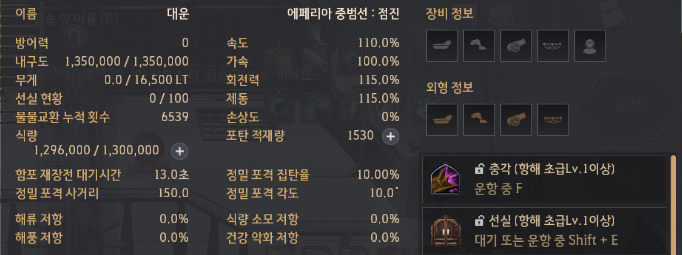

▢ 중범선 점진/균형/용맹/비상 수량 정리표 [점진먼저 물교용, 다음목표 용맹]

▢ 중범선 점진/균형 : 일리아 물교퀘 3회로 변경 (라비켈 I,II, 세렌디아 병사)

▢ 중범증축 녹+파템강화 온기,한기 / 중범이후, 토로강화 햇빛달빛, 치로강화 노을스톤
1.온기, 한기스톤 : 중범증축시 녹템과 파템강화. 파템시 온기 35, 한기 80개 준비.
2.햇빛, 달빛스톤 : 온기,한기 10개 + 별빛수정[100주화] 가열하기
[토로강화용!] 온기280, 한기360, 별빛수정66(6천6백) 일단 준비!!
주간퀘3종 온기180, 한기90
어린칸디둠 : 달의 비늘이 새겨진 합판 10, 일반 : 온기14 or 한기7 or 100까주
어린나인샤크 : 달의 핏줄이 새겨진 아마포 3, 일반 : 온기14 or 한기7 or 100까주
어린검무쇠 : 심해의 눈물 1, 일반 : 온기14 or 한기7 or 100까주
: 중범 녹템인 토로장비 강화. 햇빛=200주화, 달빛=300주화 가치!!!
3.토로 강화 햇빛, 달빛 : 4피스 개당 1만 까주. 강화는 햇빛, 달빛
4.치로 강화 노을스톤 : 햇빛, 달빛 1개 + 별빛 가루[노드]10개, 일리야에서 부품공방 제작.
5.치로장비 4부위 ★만들때 토로10강과 맞는 허가증+★ 파트별로 100개씩[총1200개] 다음 3가지 재료가 들어간다.
• 난폭한 파도가 새겨진 합판(350주화)[공작] : 난폭한 해양 괴수의 비늘 1, 바다 악어의 비늘.
• 정교하게 다듬어진 지지대(350주화)[공작] : 난폭한 해양 괴수의 뼈 1, 별빛 강화제(250주화) 1.
• 파도의 흔적이 담긴 접착제(350주화)[간이연금] : 난폭한 해양 괴수의 진액 1, 별빛 유화제(250주화) 1.
350 X 1200 = 42만 주화
치로만드기전에 몇년간 토로 쓸듯!!!,
매일 2000주화 모은다면 210일!!!
6.무역선[녹템10강]과 중범선점진 녹템(토로10강) 비교[무게위주] : 증축시 속도10%, 회전과 가속 5% 증가.
• 무역선 일반무게 : 11500 • 무역선 과적무게 : 19550
중범선점진 녹템(토로10강) 비교[무게위주], 선원300*5:1509 포함 계산
• 중범선 점진 일반무게 : 20900, 2단(800):24개, 3단(900):21개, 4-5단(1000):19개
• 중범선 점진 과적무게 : 35530, 2단(800):42개, 3단(900):37개, 4-5단(1000):34개
▢ 토로 햇빛, 달빛 강화확률 : 9에서 10강할때 32스택에 50% : 부위당 7(28) / 9(36) 정도 [토로강화용!] 온기280, 한기360, 별빛수정66(6천6백) 일단 준비!!
▢ 구축함 파템 온기,한기 강화확률 파템강화시 온기 35, 한기 80개 준비.
온기를 품은 블랙스톤 - 실패시 내구도 5 감소
| 강화 |
비고 |
강제강화 |
| +1 |
10스택 60% |
블스5 / 내구15 |
| +2 |
14스택 60% |
블스6 / 내구20 |
| +3 |
20스택 60% |
블스7 / 내구25 |
| +4 |
30스택 60% |
블스10 / 내구35 |
| +5 |
30스택 48% |
블스13 / 내구40 |
한기가 서린 블랙스톤 - 실패시 내구도 10 감소
| 강화 |
비고 |
강제강화 |
| +6 |
30스택 40% |
블스23 / 내구100 |
| +7 |
30스택 20% |
블스46 / 내구100 |
| +8 |
30스택 12% |
블스76 / 내구100 |
| +9 |
40스택 10% |
블스115 / 내구100 |
| +10 |
50스택 6% |
블스230 / 내구100 |

▢ 재갱은 설렁설렁하자[스트레스 받음] 화려한 위주로 재갱받고 일갱 까주중심 품목채우기 위주로...
1. 까주런 및 재료교환 후에 4,5단 채워주기 해야하는데 하게 되면
일반재료는 교섭력이 모자라서 못하게되고 가끔 채워주는 형식으로 한다.
[물교품은 1단50 이상유지, 2단 100, 3단 100, 4단 50, 5단 5-10정도 유지]
2. 화려한 2종, 콕스전투, 빛나는 코발트 주괴, 대양의 견고한 현철,
해저 단괴, 심해초줄기, 햇빛달빛스톤(비쌈)
1.
일
형
2.
심
▢ 1.벨리아 출발 준비
1. 에페리아 3종 : 골몬대소, 해카루, 항해경험치
2. 벨리아 나루터지기 : 고등어, 골몬대소, 해카루 항해경험치
벨리아 나루터지기 : 택배(일리아 : 1시간)
벨리아 로비니아 : 택배(틴베라 : 25분) ★출발직전 받기★
벨리아 주점주인 : 굶주린 해양생물, 콕스해적단 처치
벨리아 주점 미아 : 택배(틴베라)
▢ 2.일리아 도착
1. 나루터지기에 일리아 택배 퀘 완료하고, 오킬라아 택배 퀘 수주(1시간)
▢ 3.오킬루아 도착
1. 나루터지기에 오킬 택배 완료하고
2. 나루터지기 퀘3종, 병사 퀘3종 수주
▢ 4.대양 몹 잡고 오킬루아 복귀
1. 나루터지기 퀘3종 완료, 병사 퀘3종 완료
2. 큐리오 쪽으로 가다가 언덕 오르면 말 불러서 큐리오 퀘 2종 완 (산호조각 10, 오색 산호조각 1)
언덕위에 시후람에게 벨리아(선택) 택배퀘 수주받고 ★택배 받기★
황새치 잡았으면 낚시퀘 수주 및 황새치 1개 주고 퀘 완료
▢ 5.벨리아 복귀

▢ 파템제작 순서(증축전에 사용하기 위함) : 1. 함포, 2. 선수상(속도), 3. 돛,장갑은 재료 되는대로.
▢ 파템제작되면 강화 : 1~5단=온기를 품은 블랙스톤(10주화)[2~4단물물교환], 6~10단=한기가 서린 블랙스톤(20주화)[2~4단물물교환] [녹템 강화도 같은거 쓴다]
▢ 무역선(노템), 무역선(녹템10강), 무역선(★파템10강★), 중범선_점진(노템),중범선_점진(녹템10강),중범선_점진(★파템10강★)
▢ 구축함(노템), 구축함(녹템10강), 구축함(★파템10강★), 중범선_용맹(노템),중범선_용맹(녹템10강),중범선_용맹(★파템10강★)
▢ S1_무역선파템.png, S1_중범선노템.pn, S1_중범선녹템.png, 일퀘 36일째에 제작, 각목류 모잘랐음 (괄호는 선원, 나의장비, 나의레벨 능력치)


▢ 구축함과 무역선 비교 (중범선 점진, 비상 비교)

▢ 레마섬과 까마귀 둥지, 온기를 품은 블랙스톤(10주화), 한기가 서린 블랙스톤(20주화)

▢ CANVAS 선긋기
▢ canvas카테고리모_음 : 1개, 여기서 title에 가지고올 id넣는곳
▢ canvas안의canvas_div모_음 : 1개, 카테고리목록에서 class가 canvas_div인 div들이 id를 가지고 대기중이다.
▢ 숨김_main사이드와header관련 : 1개, main사이드(왼쪽) 클릭시 연결되는 문서들 집합
▢ 숨김_main사이드와header관련 : 1개, main사이드(왼쪽) 클릭시 연결되는 문서들 집합
▢ S1_해역사_진 : 3개,
▢ 모은재료none상태 : 1개, S1_해역사_진 에서 많이 아래쪽, 개수기록시.
▢ 샘플 : 2개,
첫번째는 canvas안의canvas_div모_음 내부자료 맨 첫번째 장소로 이동,
두번째는 숨김_main사이드와header관련 내부자료 맨아래쪽으로 이동,
▢
▢
▢
Sibling_Node_Element_tagName은대문자_TARGET순번확인
1. 공백이나 spacebar, 엔터가 있으면 text노드가 있는것이다.
2. Siblings are "brothers" and "sisters". : 같은 부모를 가졌다.
3. section에 엔터, div사이의 엔터에 text노드가 있는것이다.
4. parenNode는 무조건 element이고 최상위 element는 html이다.
5 .nextSibling, previousSibling : 주석노드나 텍스트노드인 경우가 있다.
6 .nextElementSibling, previousElementSibling : element만 다룬다
7. childNodes : childNode[0] 형식으로 선택한다. Text노드, 주석노드 포함
8. children : children[0] 형식으로 선택한다. Element만 다룬다.
★첫번째div안에 p가 하나인데 tagName을 확인하기
console.log(document.querySelector('#연습').children[0].children[0].tagName);
★첫번째div안에 p가 하나인데 다음(없는) sibling을 지정하면 error
console.log(document.querySelector('#연습').children[0].children[1].tagName);
console.log(document.querySelector('#연습').children[0].children[1].nextElementSibling.tagName);
요소.childNodes ==> 첫번째 자식들만, 주석노드, text노드, element노드
(엔터 또는 스페이스바 또는 텍스트=text 노드, 태그사이에 스페이스바나 엔터가 있으면 text로 인식된다.)
• console.log(document.querySelector('#S1_해역사진').childNodes);
NodeList(8) [text, div, comment, text, div, text, div, text]

0 : text ==> 첫번째는 text노드, 다음 div사이의 엔터
1 : div ==> 두번째는 div이다
2 : comment ==> 세번째 주석노드 : <!-- fixed -->부분
3 : text ==> 네번째는 text노드 : 엔터가 있다.
4 : div ==> 다섯번째는 div이다
5 : text ==> 여섯번째는 text노드 : 엔터가 있다.
6 : div ==> 일곱번째는 div이다
7 : text ==> 여덟번째는 text노드 : 닫는 div 앞에 엔터가 있다.
length=8;
tagName은 대문자! 예)태그이름이 input인경우 (★스크립트는 대소문자 구분!)
var 태그이름=document.querySelector('#연습').tagName);
console.log(태그이름); ==> 'INPUT'
if (태그이름=='INPUT') ==> true
if (태그이름=='input') ==> false
target 순번확인 : target표시 > parentNode올라가서 children 순회하여 표시 찾기
줄바꿈_배분정렬과wordBreak_overflow_nowarp_whitespace_aligntop_요소내줄간격
1. p등 문장 길어질때 처리. ★본인과 자식에게 모두 적용됨.
넘김 ==> white-space:normal; 넘기지 않음 ==> white-space:nowrap;
2. 넘기지 않을때 넘치는 부분 처리
넘치는곳 숨김 ==> overflow:hidden;
넘치는곳 숨김 + ... 처리 ==> overflow:hidden; text-overflow:ellipsis;
3. 문장정렬 text-align ==> left,right,center,justify양쪽정렬,start,end
줄바꿈 기준이 단어이기 때문에 균등분할시 길이가 큰 단어가 넘어갈때 공백이 커진다.(보통 영문의 경우)
4. 줄바꿈 기준 : word-break, 기본값 normal, 상속 yes
CJK(Chinese - Japanese - Korean, 중국·일본·한국)는 일본어, 한국어, 중국어를 통틀어 이르는 말
normal : CJK 문자는 글자 기준(break-all)으로, CJK 이외의 문자는 단어 기준으로 줄바꿈합니다.
• 단어기준 keep-all과 글자기준 break-all 예시 : 한글 기본값이 글자기준이라고 했는데 예시예시예시예시예시예시긴단어가걸릴때확연히알수있다 (이것은 keep-all : 단어기준)
• 단어기준 keep-all과 글자기준 break-all 예시 : 한글 기본값이 글자기준이라고 했는데 예시예시예시예시예시예시긴단어가걸릴때확연히알수있다 (이것은 keep-all : 단어기준)(추가로 배분정렬 적용 : text-align:justify; 양끝단을 맞추며 공백이 늘어남)
• 단어기준 keep-all과 글자기준 break-all 예시 : 한글 기본값이 글자기준이라고 했는데 예시예시예시예시예시예시긴단어가걸릴때확연히알수있다 (이것은 break-all : 글자기준)
• 단어기준 keep-all과 글자기준 break-all 예시 : 한글 기본값이 글자기준이라고 했는데 예시예시예시예시예시예시긴단어가걸릴때확연히알수있다 (이것은 break-all : 글자기준)(추가로 배분정렬 적용 : text-align:justify; 양끝단을 맞추며 공백이 늘어남)
break-all : 글자 기준으로 줄바꿈합니다.
keep-all : 단어 기준으로 줄바꿈합니다.
initial : 기본값으로 설정합니다.
inherit : 부모 요소의 속성값을 상속받습니다.
5. 한 줄에 inline-block, inline 요소가 여러개 있을때 맨 윗단 정렬 ==> vertical-align:top;
6. 요소내 줄간격 ==> line-height:20px; 아래 20px와 30px 예시, 줄과 줄사이의 거리
• 단어기준 keep-all과 글자기준 break-all 예시 : 한글 기본값이 글자기준이라고 했는데 예시예시예시예시예시예시긴단어가걸릴때확연히알수있다 (line-height:20px;)
• 단어기준 keep-all과 글자기준 break-all 예시 : 한글 기본값이 글자기준이라고 했는데 예시예시예시예시예시예시긴단어가걸릴때확연히알수있다 (line-height:30px;)
줄바꿈_배분정렬_overflow_nowarp_whitespace_aligntop
▢ 인라인에 onclick동작있을때 이벤트리스너 동작은?
이벤트리스너 걸어놓으거 먼저 동작후, 버튼에 걸려있는 onclick동작
▢ 같은 element에 각각 다른 이벤트를 걸수있다. ex)click, dbclick, change
★★ 클릭한 요소의 순서 : e.target.classList.add해주고 찾는형식??
▢ 이벤트리스너 이벤트 종류

JS_이벤트리스너_이벤트종류_작동순서
★ 숫자를 더할 경우 숫자로 표현되도록 바꾸어야한다.
★ typeof 요소또는 값 : value에 '1'로 문자열 숫자를 전달하든, 1 처럼 숫자를 전달하든 value의 type은 ★string★이다.
document.querySelectorAll('#차감input들 button')[0].innerHTML='1';
alert(typeof document.querySelectorAll('#차감input들 button')[0].innerHTML);
document.querySelectorAll('#차감input들 button')[0].innerHTML=1;
alert(typeof document.querySelectorAll('#차감input들 button')[0].innerHTML);
▢ 공백[여러공백]일때 : 공백일때 0으로 인식, 1을곱하면 0, 1을 곱하면 숫자로 인식, 안곱해도 숫자 0으로 인식.
▢ 많은 공백중 숫자한번 : 숫자로 인식. ==> ★ 공백일때 굳이 0 으로 설정하는 코딩이 필요없을듯.
▢ 많은 공백중 숫자 두번 : 문자로 인식. ==> ★ isNaN(표현)이 숫자가 아닐때가 true, 숫자이면 false
▢ 문자열에 곱하기해도 에러는 아니고 NaN으로 설정됨
▢ 조건 : 아닐때 !조건, or 조건 || 조건 (||는 shift ￦), and 조건 && 조건, 보다크다 >=, 보다 작다 <=,
▢ 더하기는 문자열 더하기도 포함한다는것 : 결과+=더할값 ==> 기존 결과에 우측에 더하여 붙인다.
유의사항_ARRAY_OBJECT_JSON_구분정리_01_ARRAY
• 대괄호 []로 묶여있음, const cars = ["Saab","Volvo","BMW"];
유의사항_ARRAY_OBJECT_JSON_구분정리_02_OBJECT
• 중괄호 { }로 묶여있음, const preson = {firstName:"John",lastName:"Doe",age:50,eyeColor:"blue"};
• Key는 변수 취급. ex)document.querySelector('#연습').style.display='block;'에서
display부분과 value부분 'block;' ==> 각각 firstName, "John"부분이라고 보면 되겠다.
★ Key부분에 따옴표가 없는것에 주목!! 따옴표가 있으면 값(string), 없으면(숫자제외) string이 아니라는 의미!!
• 변수.Key 형태로 값을 호출한다. 배열처럼 [순번] 안됨. 괄호(순번)도 안됨
유의사항_ARRAY_OBJECT_JSON_구분정리_03_JSON